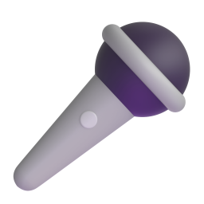
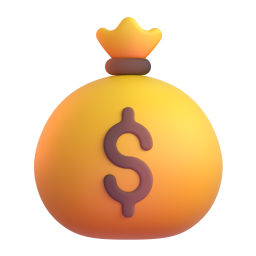
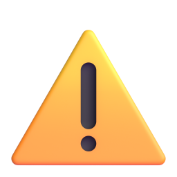
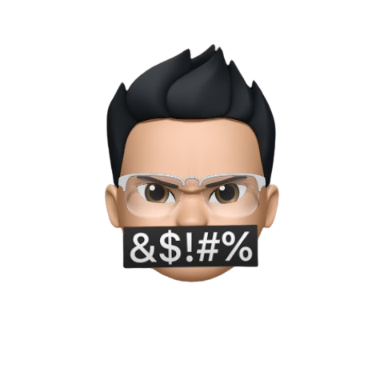

@laz.creator01 / 07
Правда,мифилинупочти?5фразпронейросети


листай

Смонтирует, но сценарий и правки всё равно твои.

Современные голоса звучат живо. Многие ролики уже озвучены нейросетью.

У бесплатных тарифов часто нет коммерческих прав. Проверь лицензию.


Решают задача, контекст и пример. Промпт лишь упаковка.

Она звучит уверенно даже когда ошибается. Цифры проверяй сам.

